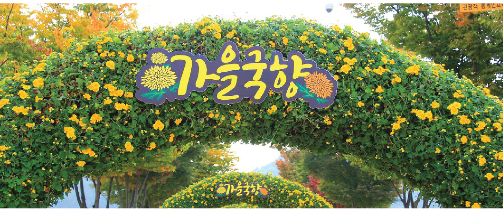

십리대숲
진행 축제
지난 축제
진행 축제
map

축제
가을국향
축제기간 : 2019년 10월 18일 ~ 2019년 11월 17일
축제장소 : 태화강지방정원 국화단지 일원
가을의 정취를 만끽 할 수 있는 곳
국화단지와 물레방아, 사물놀이, 풍차, 하트, 나비, 꽃아치 등
다양한 국화조형물로 볼거리를 제공한다.
국화단지 주변으로 라벤더, 로즈마리 등으로 조성된 향기정원과 십리대숲이 어우러져있다.
(축제기간은 국화개화시기에 따라 변경 될 수 있습니다.)
처용문화제
축제기간 : 2019년 10월 18일 ~ 2019년 11월 17일
축제장소 : 태화강지방정원 국화단지 일원
가을의 정취를 만끽 할 수 있는 곳
국화단지와 물레방아, 사물놀이, 풍차, 하트, 나비, 꽃아치 등
다양한 국화조형물로 볼거리를 제공한다.
국화단지 주변으로 라벤더, 로즈마리 등으로 조성된 향기정원과 십리대숲이 어우러져있다.
(축제기간은 국화개화시기에 따라 변경 될 수 있습니다.)